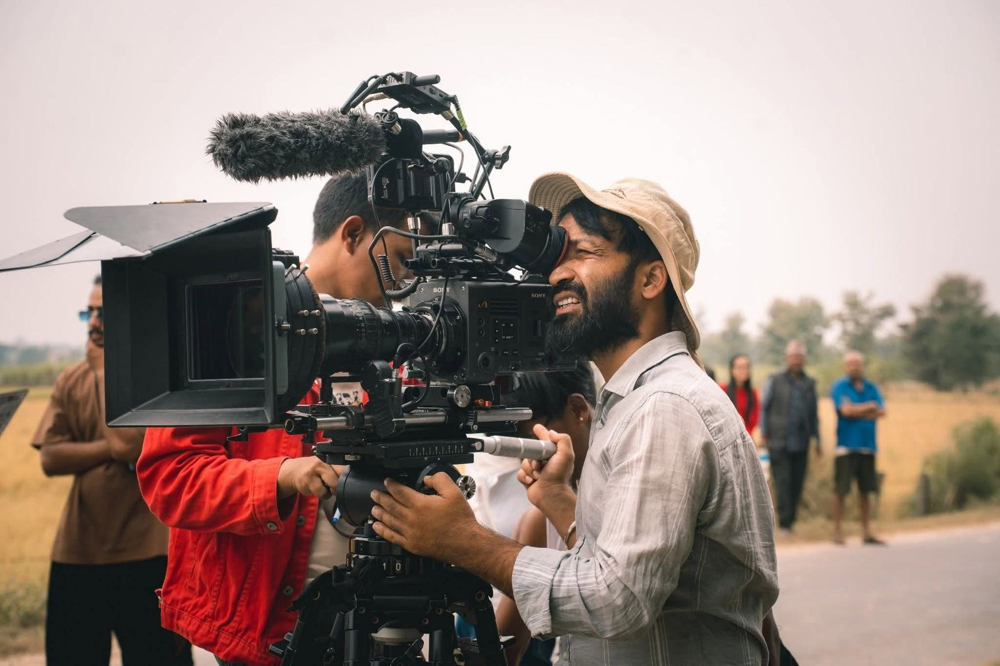

Krishna Bahadur Thapa
Cinematographer with more than ten years in Nepali cinema. Treasurer of the Nepal Film Technicians Association.

The camera department, from every seat.
Krishna Bahadur Thapa has spent more than a decade behind the lens in Nepali cinema. He came up through the camera department as an assistant and a focus puller, and today works as a cinematographer and chief assistant cinematographer.
His eye for detail and his feel for the camera help shape how a story looks on screen: sharp, deliberate frames that hold the moments audiences remember.
Films
Selected feature work
Behind the camera
On set across mountains, fields and studios.
Recognition
Planning a shoot?